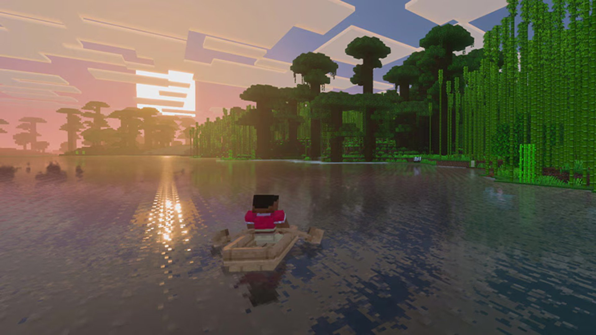
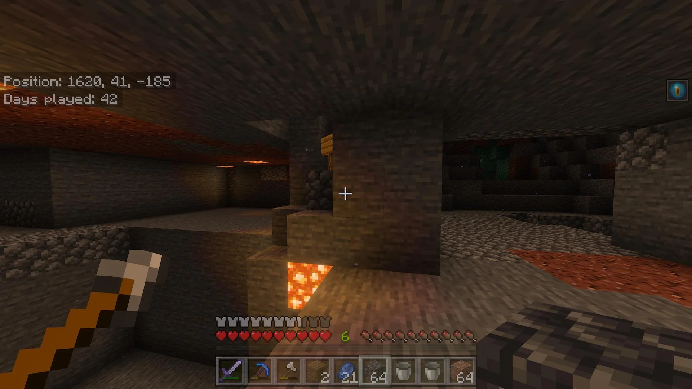
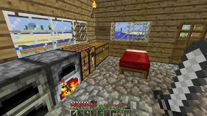
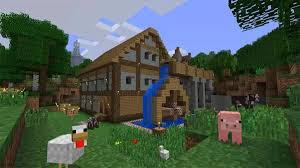

Minecraft é um jogo eletrônico sandbox de aventura em 3D onde os jogadores exploram, coletam recursos e constroem em um mundo virtual feito de blocos.

.jpg)

🧱 O Conceito de Jogabilidade
O Minecraft é um jogo "livre" que não tem um objetivo definido ou uma história linear obrigatória. A jogabilidade se resume a: Exploração: O mundo é vasto, gerado processualmente e infinito (na prática), composto por diferentes biomas (florestas, desertos, montanhas, oceanos) e dimensões alternativas (Nether e End). Mineração e Criação (Crafting): O nome do jogo é a base da jogabilidade. Você mina (quebra) blocos e recursos naturais (madeira, pedra, minérios) e usa o sistema de criação (crafting) para transformá-los em ferramentas, armas, armaduras e blocos de construção. Construção: Você pode usar esses blocos para construir virtualmente qualquer coisa que imaginar, desde uma pequena cabana até cidades inteiras e máquinas complexas.
🕹️ Modos de Jogo Principais
O Minecraft oferece diferentes maneiras de jogar, cada uma com seus próprios desafios e recursos: Modo Sobrevivência (Survival): O modo padrão. Os jogadores precisam coletar recursos, construir um abrigo antes do pôr do sol (quando monstros hostis aparecem) e gerenciar a saúde e a fome. Há uma "linha de história" opcional que envolve derrotar o Ender Dragon. Modo Criativo (Creative): Os jogadores têm recursos ilimitados desde o início, podem voar e são invulneráveis a danos. É o modo perfeito para quem foca apenas na construção e na criatividade. Modo Hardcore: Uma variação do Sobrevivência onde a dificuldade é fixada no nível mais alto, e, mais importante, o jogador tem apenas uma vida. A morte é permanente. Modo Aventura e Espectador: Usados principalmente para mapas personalizados e para observar o mundo, respectivamente.
🌐 Multiplayer e Conteúdo da Comunidade
longevidade e o sucesso do Minecraft são impulsionados por sua comunidade: Multiplayer: Os jogadores podem jogar juntos em servidores, construindo, explorando ou competindo. Realms: Servidores pessoais pagos oferecidos pela Mojang, facilitando o jogo com amigos. Marketplace: Um catálogo de conteúdo gerado por criadores terceirizados (pacotes de texturas, mapas de aventura e skins), disponível para compra, especialmente nas edições Bedrock. Mods: Na versão Java Edition (PC), a comunidade é famosa por criar Modificações (Mods) massivas que adicionam novos itens, criaturas e mecânicas, alterando drasticamente o jogo original.